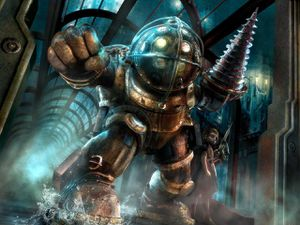

Bioshock
 De: La Frikipedia, la enciclopedia extremadamente seria.
De: La Frikipedia, la enciclopedia extremadamente seria.
De la serie Videojuegos:
Bioshock

| Desarrollado por:
|
2K ¡hundido!.
|
| Distribuido por:
|
2K.
|
| Diseñado por:
|
Un Big Partie.
|
| Motor
|
De hidrocarburo.
|
| Género(s)
|
FPS/RPG (Mezcla entre first person stupid y roler person gansino).
|
| Fecha de lanzamiento:
|
31 de Aghosto.
|
| Modos de juego:
|
Campaña (sin tienda, claro).
|
| Requisitos:
|
Abrir, meter el disco y jugar.
|
| Disponible en:
|
Nasvidá
|
| Formatos:
|
E-Nvidia y en DVD.
|
| Edades:
|
+111.
|
| Puntuaciones:
|
100 / 100
|
Eres lo suficientemente friki macho para jugarlo ?
Bioshock es un juego ambientado en la decadente época de los años 60 en el que la gente no tenía mejor que hacer y se dedicaba a pegarse de leches por las esquinas, gritar a voces que necesitan drogas o que simplemente estan descontentos con la gente zarandeando cañerias, palancas y demás mientras llevaban garfios o se creían que una cerilla podía quemarte vivo.
En este bonito y decadente marco llegas a una ciudad submarina después de sobrevivir a un accidente de avión. Debes de ir por la ciudad arramblando con lo que veas (que es muy poco, la verdad) y hacer lo que te dicen unos tipos por la radio.
La historia en breve
Cuando ibas de camino a Europa a conocer a una de tus hermanitas, resulta que por unas extrañas circunstancias tu avión se estrella en medio del mar y tú al ver un misterioso faro y no tener nada mejor que hacer que darte un paseito, te metes dentro y... !Oh, una ciudad submarina y salvaje apareció! Al llegar descubre que la ciudad puede que fuera de buen rollo al principio en el video explicativo que te decía que eso era un mundo de florecillas y amor submarino, pero en realidad todo está que da pena.
Tras eso descubres que a la gente le pirra una especie de droga rara que se llama Adam Savage con la cual se vuelven super chungos y hasta han atracado al barrendero para sacarse unas perras (por eso todo está mugriento). Por ello tienes que ir a junto el alcalde de la ciudad para cantarle las cuarenta sobre lo puerca que está en la ciudad de marras, además de empezar a agenciarte, Adam para chutarte y demás cosas con las que te cepillas a los yonkis de los habitantes.
Después de tener un pequeño malentendido con el alcalde de la ciudad e incrustarle un palo de golf en la chola, se descubre el pastel de que el tipo que te guiaba en realidad era un puto vago que te manejaba y quería agenciarse la ciudad y tener su imperio submarino, pero como te cabreas un poco con el decides ir a cepillartelo.
Por en medio de la ciudad además encuentras a unas pequeñas zorras adorables niñitas que forman parte de una ONG pro-reciclaje y se dedican a reciclar los fiambres de los tipos que has apalizado mientras se dan un paseíto con sus papas, los cuales no se quitan el mono ni el casco de buzo para cagar.
Personajes
Los personajes principales (o los que hacen algo) son:
- Jack: Es el prota, que llega a la ciudad después de hacer mierda el avión en el que iba. Cuando llegas junto a Andy Ryan el muy cabrón te dice que solo tienes 2 años de edad (pero que tiras, escribes, metes leches y fumas como uno de 30) y que tú sin darte cuenta le diste una botella de whisky al piloto del avión para que se espichara. Además, el muy gilipollas hace todo lo que le dicen si escucha la palabra "coño", pero la doctora Tenenbaum le anula esa facultad y se vuelve capaz por sí mismo.
- Altas: Un pedazo de vago que se comunica contigo por la radio y que te guía durante la primera mitad de la aventura. Te explica todo lo que tienes que saber de la ciudad y te dice como llegar hasta Andrew, aunque la primera vez el tipo quería llegar hasta una cápsula para coger una bolsa de pipas que se había dejado allí.
- Andrew Ryan: El tipo que empezó a construir el tugurio ese solo porque fuera le gorroneaban de todo y allí nadie le protestaría por tener cuatro puertas blindadas, cámaras de seguridad hasta en la sopa y ametralladoras o lanzacohetes automáticos. Cuando le desactivas todo el tipo intenta destruir la ciudad, pero la caga y te lo cargas.
- Tenenbaum: Es la única con cabeza que hay por la ciudad. Esta te manda de vez en cuando peluches llenos de droga si no violas a las Little Sisters cuando te cargas a los Big Daddys.
- Frank Fontaine: Este se hacía pasar por Atlas para que te cepillaras a Andrew porque él era un cagado. Después de descubrir que te utilizó como una marioneta te cabreas un poquito con él y decides matarle, por lo que él decide meterse más Adam en el cuerpo que pelos tiene en la cabeza porque tú eres la repolla, pero al ser la repolla y él solo volverse fosforito, le rompes el ojal.
- Sandler Cohen: Un majareta que vive en Fort Frolic. Durante esa etapa tienes que dedicarte a cargarte a sus ex-amigos a los cuales les prestó su colección de DVD's de porno y no se los devolvieron y luego sacarles una foto para colgarla en internet. Un buen tipo hasta que le pillas cascándosela y decide matarte (ya averiguáis el resultado... ¿no?).
Armas
En el juego tienes dos tipos de armas (sí, eres una especie de soldado polivalente a pesar de tener 2 años de edad): Las normales y los Plásmidos. Las normales cascan a los enemigos mientras que los plásmidos solo te echan una manita (no, la muerte es secundaria).
Armas normales
Dentro del maravilloso arsenal que Jack tiene se encuentran las siguientes armas:
- Llave Inglesa: Arma polivalente en todos los sentidos, dado que como su nombre indica abre desde una puerta hasta la chola de un splicer. Por ello se sospecha que Jack puede ser pariente de cierto científico famoso que trabaja en Black Mesa debido a su manía por dar llavazos y el color rojo de esta. Es la única arma que no se puede mejorar.
- Revolver: La cosa empieza a animarse. Esta se la chorizas a un Splicer después de discutir con él en que no se deben meter armas en los carros de los bebes y un llavazo. Tiene tres tipos de munición: Normales (no valen pa ná), perforantes (penetran lo impenetrable) y antipersona (un tiro en la chola a un splicer y... chao).
- Ametralladora: Esta la afanas en un puesto de control. No tiene nada especial, puesto que es igual que la pistola, solo que tiene más munición, a demás cuando estas tirando se le va la onda y acabas destruyendo las lámparas.
- Escopeta: Todo un dulce clásico en los juegos de disparos. Puedes mejorarla para que pete igual de rápido que una ametralladora. Los tres tipos de munición que tiene son: Cartuchos normales, pilas y petardos.
- Lanzagranadas: Hecho con tres cachos de cañería, dos latas de conserva, un poco de cola, dos periódicos y cuatro clips aplastados (estos son los que le dan tanta fuerza). Esta arma hace las delicias de los que sueñan con poder hacer armas caseras y lanzar petardos a las ancianas. Los tres tipos de munición son: RPG's buscadores de calor (juegos de rol no, sino misiles, palurdo), minas de proximidad y granadas de fragmentación (que curiosamente son latas de carne en conserva).
- Lanzador químico: Casi de la misma fabricación que el lanzagranadas, pero este mola más. Los tres tipos de munición que tiene son: Napalm, nitrógeno líquido y
semen gel eléctrico.
- Ballesta: Los amantes de lo clásico o de la época medieval harán delicias con esta pequeña maravilla. Los tres tipos de munición: Virotes normales, virotes incendiarios y virotes trampa. Lo mejor de esta arma es que si los virotes no se malogran mucho (échale en un 99'9%) puedes reciclarlos y
mantener Rapture más limpio ahorrar munición.
Plásmidos
Los autores de este juego en realidad habían creado un RPG, pero como estos ya habían pasado de moda, decidieron disfrazarlo para que los tarados gamers se lo tragarán lo disfrutarán, así que en lugar de poderes mágicos, crearon los plásmidos, que cumplen exactamente la misma función pero con otro nombre. Los plásmidos son una drogas unas habilidades que te pueden ayudar a cargarte a todo dios en la ciudad y las vas consiguiendo poco a poco (aunque otras las consigues si te sale de la polla). Te gastan la barrita de EVE, que es como el maná y tienes que pincharte un poco de jaco EVE en vena para poder volver a hacerlas. Los plásmidos son:
- Electrorrayo: Es el resultado de pincharte mercurio de pilas en vena. Con esta habilidad lo más que haces es dejar a los splicers tiesos o si están en el hagua les pega un viaje de aquí a mañana.
- Incinerar: Este en realidad se genera por pincharte queroseno, gasofa, helio, pis de mosquito y hagua bendita en vena. Un chasquido de dedos y tienes brochetas de splicers listas para servir.
- Telekinesis: Una de las habilidades más útiles que existen, puesto que termina con uno de los grandes suplicios de la humanidad: levantarse a por el mando cuando estas tumbado en el sofá.
- Muñeco de tiro: Una que también es de las mejores. Con este plásmido creas un muñeco transparente hecho con pedos, humo de tabaco y polvo de ángel que tu enemigos atacan como monos se tiran a un plátano y hasta que el pelele no se acabe, tu puedes escaquearte o hacer mierda a tus enemigos.
- Ráfaga invernal: En realidad para esta no te has pinchado nada, porque solo te has comido un polvo de un bocado y acto seguido te has bebido un martini congelado con hielo. Con esta habilidad puedes congelar a los pavos o a los sistemas de seguridad para poder hackearlos con la punta de la polla y enfriar tus chelas cuando no hay hielo cerca.
- Enfurecer: Esta habilidad la consigues al encontrar publicidad electoral. Al lanzársela a los splicers los tipos se vuelven como locos y sufren tal enajenación mental que empiezan a meterle de leches a todo lo que encuentran enfrente. Una de las mejores estrategias es tirarle este plásmido a un Big daddy, cuando tengas oportunidad inténtalo, el resultado es muy divertido.
- Diana de Seguridad: Esta habilidad consiste en ponerle encima a un enemigo una chocolatina, y como los sistemas de seguridad están muertos de hambre, van a por el tipo a ver si se consiguen algo.
Enemigos
Hay un enorme elenco enemiguil en este juego, todos por lo general suelen ser más feos que un mono leproso y castrado, Mariano Rajoy o La hija que Elba Esther Gordillo tuvo con Agustin Carterns. Los diversos enemigos que te puedes encontrar son:
Splicers
Estos son los enemigos normales que están como cucarachas por toda la ciudad. Son más feos que una rana deforme y por eso todos llevan máscaras cutrongas. Además, estos son los ciudadanos que se pulieron toda la pasta que tenían en modificarse genéticamente, por lo que están como unas putas cabras y quieren conseguir más pasta para poder chutarse. Dependiendo de como te ataquen los muy joputas, hay distintos tipos:
- Splicer Araña: Si ya odiabas al hombre araña, estos te van a caer peor, por piratas y tocados. Son como una mezcla entre el exorcista, el Capitán Garfio y Paris Hilton. Uno de ellos te saluda al inicio del juego, aunque los verdaderos trancazos empezarán después. Utilizarón el plásmido del Capitán Garfio y por eso llevan unos ganchos con los que te intentan rajar al más puro estilo "Se lo que hicisteís el último verano", aparte de arrearte patadas chulescas y demás mierdas. Como su buen nombre indica
son los cuñados de spiderman pueden engancharse a las paredes y ahorrarse el billete del autobus.
- Splicer Escupeplomo: Los únicos medianamente inteligentes de la ciudad, puesto que estos te convierten en un colador a la mínima. Al igual que los demás splicers estos son extremadamente amorfos, pero alguién debería enseñarles que las ametralladoras y pistolas no necesitan un biberón o un carricoche.
- Splicer Houdini: Estos en realidad lo que tuvieron fue un cursillo de Magia Borrás por navidad y aprendieron a desaparecer (y algunos aún no aprendieron a aparecer). Estos se metieron solo plásmidos para poder lanzarte fuego o hielo. De todos, estos son los más hijoputas. Estos splicers son bastante escurridízos y difíciles de ver, por lo que una buena táctica es echarles el plásmido de fuego. Esto a demás te puede proporcionar largas horas de sano entretenimiento.
- Splicer Agresor:Los más cutres de todos y los más fáciles de apalear/violar del juego. Te atacan cuerpo a cuerpo con una cañería/palanca/cosa grande que haga pupa. Estos eran los que abusaban sexualmente de las pobres niñitas, hasta que estas se les asigno un protector a las little Meniñas. Sin embargo, estos siguen siendo... Masocas
- Splicer Nitro: De estos hay más bien pocos, porque el tener armas así les sale muy caro a los jodíos. Te atacan tirandoté diversos tipos de explosivos: Desde cocteles molotov hasta granadas. Los más gilipollas de todos los que existen, porque por mucho que tú les devuelvas las bombas que te tiran con la telekinesis, ellos seguirán tirándotelas.
Big Daddys
 ¡¿Quién ha dicho fiesta?!
Por Rapture adelante hay unos bichos enormes con escafandras y que imponen tanto respeto en la ciudad como Eddie entre los jebis. Estos son los Big Daddy (o papas grandotes) también conocidos como Mr. T B. Son los tipos que más te joderán en todo el juego, puesto que al llevar fundida la escafandra al cuerpo estos no notan una mierda de lo que les haces por muchos tiros/leches/demás cosas que les hagas. Son de dos tipos:
- Gorila: Tienen una escafandra con 6 ranuras y son los más bestias que hay. Llevan encima un taladro con el que disfrutan porculizando a todo dios. Además también te embisten y te meten unos leñazos que te mandan al quinto pino.
- Rosie: Son un poco maricas, pero no te andes con chiquitas contra estos. Al contrario que los otros, estos atacan a distancia con un rifle de clavos (sí no les da para las balas) y también te tiran minas.
Tácticas para derrotar a un Big Daddy
Entre los jugadores existen diversas tácticas para acabar con un Big Daddy dependiendo de tu situación o como te haya dado la venada ese día. Aquí van las más conocidas:
- Atacar a lo bestia: Se basa en eso, tú coges tu pistola con munición perforante, la ametralladora igual, la escopeta con balas eléctricas y las granadas de fragmentación y te lanzas contra el Big Daddy gritando "Leeroy Jenkins" (o en su defecto "This is Sparta"). Tras unos 10 minutos de combate, veinte perforaciones en ombligo y nariz, y 5 kit de primeros auxilios gastados, te hechas a correr esperando que el Big Daddy tenga mala puntería o al menos se haya puesto vaselina. En la corretisa tienes que buscar en el suelo granadas, balas, pistolas o al menos unas piedras medio duras para darle en el coco, si todo sale bien lograrás matar al Big Daddy después de unas diez revividas en las vita chambers. Obviamente la clave esta estrategia es la perseverancia.
- Hackearlo todo: Esta podría ser considerada la táctica más segura y la que mas munición ahorra, a demás de que el jugador se expone menos. Consiste en buscar un mod que aumente el daño de tu personaje a mil, de esta manera serás capaz de matar al Big Daddy con un golpe de llave inglesa. Algunos jugadores han reportado que es posible acabar el juego en tiempo recórd utilizando esta táctica.
- Ir a lo vago: Básicamente te dedicas a hackear las cámaras, torretas ametralladoras, torretas lanzamisiles y todo lo que veas para que cuando venga el Big Daddy se lo pulan a cañonazos mientras tú también le das la del pulpo y el Big Daddy se dedica a destruir tus pobres torretas.
- Prepararlo con antelación: Este modo es el más efectivo, pero uno de los más caros. En este ves llegar al Big Daddy y antes de que empiece a pulirte a leches empiezas a poner virotes trampa y minas por donde tú estás. Después le pegas un tiro y el tipo como un cordero se comerá todas tus trampas. Los principales peligros de esta táctica son que el Big daddy se valla por otro camino y que tu seas el que cae en dichas trampas.
- Plan terrorista: En esté te dedicas a atacar a base de explosivos y bombas al armatoste que te viene encima, puesto que las bombas son muy efectivas contra las torretas y demás cosas blindadas. La única pega de esta táctica es la poca munición que tiene el lanzagranadas y que si disparas desde cerca te puedes pegar a tí también un pepinazo.
- Espectador: En este más bien pones un muñeco de tiro cerca del Big Daddy para que los splicers cercanos empiecen a meterle de hostias y entre ellos le peten el cacas al Big Daddy (nunca pasa). Lo más que puedes esperar de los miserables de los Splicers es que le peten un poco para que remates tú el trabajo.
- El cizañoso: Esta táctica consiste en buscar a uno de los Big Daddys y decirle que su compadre le estaba poniendo el cuerno, luego llévalo hasta donde esta el otro Big Daddy y pegale un moquetazo, espera a que se armen los trancasos y hechales porras, cuando terminen de partirse el quezo, termina al que quedó vivo y robales la quincena a los dos. (plásmido hipnosis).
- Científico Loco: Con esta táctica agarras el lanzador químico y como es un arma rápida empiezas a fundirle todo el napalm/nitrógeno líquido/gel eléctrico que tienes encima (lo más preferible es el gel o el nitrogeno, porque no se moverá) hasta que lo matas por intoxicación. Bastante efectiva si se combina con la de espectador o con la preparación, puesto que si empiezas a fundirle al Big Daddy toda tu munición desde el principio, te quedarás en gayumbos.
Little Sisters
Estas niñitas que deambulan por Rapture como si se tratara de un parque con su correspondiente Big Daddy son las que se encargan de recoger el Adam de los pavos que tú has violado/porculizado/volado en pedazos/abierto el craneo con la llave. En el juego puedes cosecharlas (las violas y consigues adam, pero la niñita muere) o salvarlas (les sacas menos Adam, pero no las violas). Por cada tres criajas que salvas Tenembaum te manda un peluchito con Adam y balas/botiquines/cosas para chutarte y por cada una que matas Teneambum te dará una buena mentada de madre.
Además, las criajas están medio taradas porque de vez en cuando estas dulces niñitas empiezan a gritar "Matalo" y se te tiran encima como si fueran una bandada de banqueros dispuestos a sacarte la pasta. Para llegar hasta las putas crías estas tienes que cargarté el Big Daddy que llevan a cuestas como si fuera un zombi (bueno... es que en realidad son zombis), así que ármate de valor y fríelos a tiros.
Se cree que si derrotas al Big Daddy y las dejas solas, Pedobear aparece cuando no miras y las secuestra volviendolas suyas.
Sistemas de seguridad
Los sistemas de seguridad de la ciudad te lo pondrán a veces bastante crudo aunque parezca que los ha hecho un jubilado con demasiado tiempo libre, pegan buenas patadas. Puedes piratearlos para que te hagan el trabajo sucio, pero ten cuidado por que algunos tiene secu-rom y cuestan un poquito mas de trabajo. Los hay de diversos tipos:
- Cámaras de seguridad: Unas cámaras hechas con lo que parece ser un bidón de gasofa vacío. Puedes pillarlas rápidamente porque emiten una luz (a quien se le ocurre) y cuando te ven empieza a sonar como si llamarán a la puerta. Lo único que hacen estas mierdas es llamarte a los robots de seguridad para que te dejen como un colador.
- Bots de seguridad: Una mierda de helicópteros con ametralladoras que se dedican a seguirte durante un tiempo pegando más tiros que un dominguero el día que gana su equipo de futbol. Para hacer que vayan de tu lado puedes o piratear la cámara de seguridad que los manda y así se cepillan a tus enemigos, o ir pirateándolos uno por uno. Si pirateas los boots, puedes llevarte dos para que te ayuden, pero no te hagas ilusiones por que al primer trancazo los splicers los mandarán a volar y si no te fijas se irán directo a tu cabeza.
- Torretas: Las hay por toda la ciudad, y pueden ser bastante útiles en muchos casos. No se mueven y al aparecen en su campo de visión empiezan a hacerte comer plomo. Piratearlas es bastante sencillo y no hay que romperse mucho en molondro para hacer que peguen tiros por tí. Las hay de varios tipos:
- Ametralladora: Son las más normales, sin demasiada potencia, pero bastante resistentes. Pueden venirte bien de vez en cuando para lidiar con los Splicers o hacer que algun Big Daddy caiga en alguna trampa.
- Lanzamisiles: Escasas, pero muy potentes. Pueden petar el cacas a grupos de splicers o a los Big Daddys, pero contra estos últimos saldrán bastante malogradas sino es que las hacen mierda.
- Lanzallamas: Las más raras, pero las que más joden. Increíblemente útiles para lidiar con los Splicers cuando andas a otra cosa. Si puedes soportar que las cejas se te chamusquen, vale la pena intentar hackearlas.
Explorando Rupture
A medida que avanzas encuentras lindos paisajes y máquinas tragaperras que si no pirateas te quedas en gallumbos, por que qué precios.
Acabas llegando al submarino donde Atlas se dejó las patatas fritas, pero cuando abre la puerta, le atacan una horda de Splicer arañas combinados con el apollo de unos Splicer Cerdos mandados por Andrew, que acaban volando el submarino con las patatas fritas.
Ryan, la has CAGADO
Por fin. Llegó el momento. El encuentro de proporciones bíblicas. A cargarse a Andrew el de la Raya.
- Andrew: Mierda, he fallado el hoyo. Ah, ¿Ya has saltado todas las defensas?
- Tú: Exacto.
- Andrew: Parece ser que tu mente reacciona con alguna frase... Tal vez... ¿Leñe?
(Aparecen ante tí todas las transmisiones con la palabra leñe, y la última: Mata a ese hijo de perra, Leñe!)
- Andrew: Pues ¿sabes que? Mata, leñe!
(Y le clavas el palo de golf)
|
|
 Shooter Shooter
 Terror Terror
 Velocidad Velocidad
 Rol Rol
 Estrategia Estrategia
 Aventuras Aventuras
 Fight! Fight!
 Clásicos Clásicos
 Deportivos Deportivos
 Aventura gráfica Aventura gráfica
 Novela visual Novela visual
 Personajes de videojuegos Personajes de videojuegos
|
Autor(es):
- Doctor grijander
- Matagrunts
- Khazike Khashondo
- Pocholito
- Setokayba
- WTF
- Mataphazon
- Pakirri
- DragóN
- Dark temptation
Frikipedia 2005-2016, Licencia
GFDL 1.2 - Extraído por FrikiLeaks